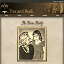

CS 2350 Assignments Website was overall not too hard, just a little time consuming.
However, the instructions were a little hard for me to understand, especially when
reading how to submit the assignment. From what I gather, to submit the assignment,
we are to put the html and css files directly into public_html, but it is hard to say.
The hardest part other than that was getting the banner and lists to line up how I wanted.
The first layout took me a while to get going.
I didn't really have an idea of what kind of designs I wanted to do, but once I finished the first design, the
second one didn't take too long. I think the hardest part for me was deciding how to write the html to allow for
two complete different designs. I kind of based mine on one of the examples provided in the assignments, and I
like the way they turned out. The first one was a little more simple of a design so I decided to go for a more
eccentric look with the second layout . The
schedule was also fairly easy for me, it was just
a matter of getting the colors I wanted. Overall, I liked working with a little bit of a grid system with my story
page and making a custom table was fun.

3-3 Challenge:
Add Graphic Design
This assignment wasn't too diffiicult for me. It took awhile mostly because I didn't really know how I wanted to divide
up the design that I needed to add, but I think I came up with something about as good as I think I can get. The only
real issue I have with it is my in my header, the second background has a white box and I couldn't find a picture that I wanted
that didn't have the white background. It's also interesting to see how the transformation of an image doesn't really do much
until you give it perspective.
This assignment actually was not too bad for me to work through. There were a couple things that took me awhile to figure out, one
of those being that every time I submitted the form, I would get no data back even though everything had names, and I copy and pasted
the link for the form from canvas so that could not have been wrong, but after looking at the discussion for module 3, I saw that
someone had the same problem as me and someone else figured out that the link was https not http like it is on canvas. Other than that,
it was fairly fun and I used some colors that I don't usually use, so that was interesting.
This assignment was also not really too bad for me to work through. I feel like I'm actually getting JavaScript pretty well. If you notice,
the last modified on mine actually says April 5, which I know now is not what it is supposed to be because lastModified takes the last time
that the HTML document was modified, so I was getting like May 2020 which through me off and after looking through the internet, I added a script
to test in the HTML document which changed the modified date to be April 5 2022. Other than that though, the sorted number array kind of threw
me off with the sort function, but I figured it out after a couple google searches. On that note, I just uploaded it to the icarus server and the
date modified updates as it should now, so I'm not really sure what is up with that after all.
This assignment was honestly not as bad as I thought it was going to be. After still not quite being able to finish the first try it out and having
a rough time on the second one, I did not have super high hopes. However, the only part that really gave me trouble was at the start trying to understand
what the span part meant, but that made sense after I looked at the pictures, and then I couldn't figure out the event handler, but it turns out that
the handler wasn't the problem. I set up the random number generator to go between 1 and 2, but I didn't realize that it was 1 and 2 exclusive, meaning
I wouldn't ever get a different picture. After I made it 1 and 2 inclusive, it worked just like it should. As I'm uploading this, I've come to discover
that the images aren't showing up for some reason even after quintuple checking my links.
This assignment was also really not too bad. The only parts that really gave me trouble was figuring out how to make the boardingCost and totalCost accurately
represent the amount if days was over 50, because it worked in the boarding area but not at the end. Turns out I was doing what I needed to do, turning the value
into a string and replacing the commas with empty spaces, but I was doing it on multiple lines which I guess was not working. The other part that gave me trouble
was trying to figure out why my costs were rounded to the 2nd decimal place, but not showing if there wasn't a 2nd decimal place, but I used the function from the
learning activity to format to the 2nd decimal place and when calling the function, I didn't ever specify the number of decimal places.
This assignment gave me a good bit of trouble as you could tell by me asking for some assistance. I figured it all out not too long after our meeting, I'm taking
a C++ class right now which we use CLion and I always use debug for that but it never really occurred to me to actually use the debug for JavaScript, which was very
helpful in our meeting, so using that, the rest of the troubleshooting came a lot easier. The symbol array problem we were having was due to a simple mistake of trying
to make an array using ()s rather than []s when declaring it. Other than that though, even though I very much procrastinated this until the last second because I really
did not want to do it, I had a fairly good time and think it was a nice assignment to round off the course with.